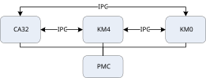

架构
Linux 系统休眠框架
为了减少系统功耗，Linux 提供了一个全面的电源管理框架。电源管理系统是一个相对广泛的子系统，涵盖了电源供应、时钟、频率、电压和系统休眠等方面。其中，系统休眠在整体功耗中起着关键作用，是本章的主要关注点。
Linux 系统休眠框架的架构如下图所示。
{kind=link}
用户空间可以通过 sysfs 层访问 PM（电源管理）核心来控制系统休眠的进入和退出。PM 核心还为内核空间提供了内核 API。挂起核心是 PM 核心的主要组成部分。由于系统休眠涉及系统的各个方面，挂起核心可能会调用其他子框架，例如中断子系统。PM 核心最终依赖于与系统休眠相关的架构依赖驱动程序，包括电源管理控制器（PMC）和外围设备的驱动程序。PMC 需要异构多处理器的参与。
该芯片采用非对称多处理器架构，其中包括 CA32、KM4 和 KM0。这些核心可以相互协作以实现更低的功耗。核心间通信通过 IPC（进程间通信）实现。PMC 协调多核心参与控制。
{kind=link}

使用非对称多处理器架构的另一个优点是可以在小核心上开发简单功能，从而在提供用户所需功能的同时实现低功耗。
休眠模式
由于采用多处理器架构，系统功耗可以非常低。同时，它为休眠状态提供了更多选择。目前，它支持以下休眠模式。
休眠模式 |
标签 |
描述 |
|---|---|---|
Active |
_ |
|
Standby |
mem |
|
CG |
cg |
|
用户可以通过 sysfs 接口控制休眠模式。“标签”指示在进入特定休眠模式时写入相关 sysfs 节点的值。
待机模式仅影响 CA32 本身，并不影响 KM0 和 KM4 的状态。CG（时钟门控）模式具有更深的休眠级别，其功耗远低于待机模式。CG 模式会影响所有核心和 DRAM 状态。当控制 CA32 进入 CG 模式时，CA32 将通过 IPC 通知 KM0 和 KM4 也进入 CG 模式。如果 KM4 和 CA32 处于 CG 模式，DRAM 也将进入低功耗状态。DRAM 低功耗状态意味着，如果 DRAM 是 DDR 内存，它将进入自刷新模式，这表示它会保持所有内存数据但无法被访问。该状态需要的功耗要低得多。
备注
PG（电源门控）模式正在开发中。它的耗电量将低于 CG 模式。
功耗：PG < CG < 待机。
睡眠/唤醒所耗时间：PG > CG > 待机。
用途
唤醒源配置
介绍
下面列出的外设现在可以配置为唤醒源，并且这些外设的中断可以唤醒系统。
外设和唤醒源之间的映射关系列在下表中。
外设 |
唤醒源 |
|---|---|
GPIOA |
WAKE_SRC_GPIOA |
GPIOB |
WAKE_SRC_GPIOB |
GPIOC |
WAKE_SRC_GPIOC |
TIMER1 |
WAKE_SRC_Timer1 |
TIMER2 |
WAKE_SRC_Timer2 |
TIMER3 |
WAKE_SRC_Timer3 |
TIMER4 |
WAKE_SRC_Timer4 |
TIMER5 |
WAKE_SRC_Timer5 |
TIMER7 |
WAKE_SRC_Timer7 |
RTC |
WAKE_SRC_RTC |
ADC |
WAKE_SRC_ADC |
CAPTOUCH |
WAKE_SRC_CTOUCH |
UART0 |
WAKE_SRC_UART0 |
UART1 |
WAKE_SRC_UART1 |
UART2 |
WAKE_SRC_UART2 |
LOGUART |
WAKE_SRC_UART_LOG |
备注
对于LOGUART，在休眠和唤醒期间日志出现乱码是正常现象。
通用配置
按照以下步骤配置唤醒源，以ADC为例：
修改配置文件
firmware/component/soc/amebasmart/usrcfg/ameba_sleepcfg.c中用于睡眠设置的结构体sleep_wevent_config。/*wakeup attribute can be set to WAKEUP_NULL/WAKEUP_LP/WAKEUP_NP/WAKEUP_AP*/ WakeEvent_TypeDef sleep_wevent_config[] = { // Module wakeup {WAKE_SRC_nFIQOUT1_OR_nIRQOUT1, WAKEUP_NULL}, {WAKE_SRC_nFIQOUT0_OR_nIRQOUT0, WAKEUP_NULL}, {WAKE_SRC_BT_WAKE_HOST, WAKEUP_NULL}, {WAKE_SRC_AON_WAKEPIN, WAKEUP_LP}, {WAKE_SRC_WDG4, WAKEUP_NULL}, {WAKE_SRC_WDG3, WAKEUP_NULL}, {WAKE_SRC_WDG2, WAKEUP_NULL}, {WAKE_SRC_WDG1, WAKEUP_NULL}, {WAKE_SRC_UART2, WAKEUP_NULL}, {WAKE_SRC_UART1, WAKEUP_NULL}, {WAKE_SRC_UART0, WAKEUP_NULL}, {WAKE_SRC_SPI1, WAKEUP_NULL}, {WAKE_SRC_SPI0, WAKEUP_NULL}, {WAKE_SRC_USB_OTG, WAKEUP_NULL}, {WAKE_SRC_IPC_AP, WAKEUP_AP}, {WAKE_SRC_IPC_NP, WAKEUP_NP}, {WAKE_SRC_VADBT_OR_VADPC, WAKEUP_NULL}, {WAKE_SRC_PWR_DOWN, WAKEUP_LP}, {WAKE_SRC_BOR, WAKEUP_NULL}, {WAKE_SRC_ADC_COMP, WAKEUP_NULL}, {WAKE_SRC_ADC, WAKEUP_NULL}, {WAKE_SRC_CTOUCH, WAKEUP_NULL}, {WAKE_SRC_RTC, WAKEUP_NULL}, {WAKE_SRC_GPIOC, WAKEUP_NULL}, {WAKE_SRC_GPIOB, WAKEUP_NULL}, {WAKE_SRC_GPIOA, WAKEUP_NULL}, {WAKE_SRC_UART_LOG, WAKEUP_NULL}, {WAKE_SRC_Timer7, WAKEUP_NULL}, {WAKE_SRC_Timer6, WAKEUP_NP}, {WAKE_SRC_Timer5, WAKEUP_NULL}, {WAKE_SRC_Timer4, WAKEUP_NULL}, {WAKE_SRC_Timer3, WAKEUP_NULL}, {WAKE_SRC_Timer2, WAKEUP_NULL}, {WAKE_SRC_Timer1, WAKEUP_NULL}, {WAKE_SRC_Timer0, WAKEUP_NULL}, {WAKE_SRC_WDG0, WAKEUP_NULL}, {WAKE_SRC_AP_WAKE, WAKEUP_NULL}, {WAKE_SRC_NP_WAKE, WAKEUP_NULL}, {WAKE_SRC_AON_TIM, WAKEUP_NULL}, {WAKE_SRC_WIFI_FTSR_MAILBOX, WAKEUP_LP}, {WAKE_SRC_WIFI_FISR_FESR, WAKEUP_LP}, {0xFFFFFFFF, WAKEUP_NULL}, };
将
WAKE_SRC_ADC设置为WAKEUP_AP，告知系统将ADC中断视为唤醒事件。{WAKE_SRC_ADC, WAKEUP_AP},
当ADC中断发生时，它将唤醒系统。
重新编译并下载固件以应用新的设置。
一旦将包含更新的休眠配置的固件编入设备并使系统进入休眠模式，如果发生ADC中断（例如，由于某些根据用户需求预定义的条件），它将触发系统从休眠中唤醒。
特殊配置
一些外设除了常规配置外，还有额外的配置。
OSC4M
ADC、CAPTOUCH、UART、LOGUART在休眠模式下需要OSC4M来驱动。用户应在 firmware/component/soc/amebasmart/usrcfg/ameba_sleepcfg.c 文件中的结构体 ps_config 中将 keep_OSC4M_on 配置为TRUE，以启用OSC4M。
PSCFG_TypeDef ps_config = {
.km0_tickles_debug = TRUE, /* if open Wi-Fi FW, should close it, or beacon will lost in WOWLAN */
.km0_pg_enable = FALSE,
.km0_pll_off = TRUE,
.km0_audio_vad_on = FALSE,
#if defined(CONFIG_CLINTWOOD ) && CONFIG_CLINTWOOD
.km0_config_psram = FALSE, /* if device enters sleep mode or not, false for keep active */
.km0_sleep_withM4 = FALSE,
#else
.km0_config_psram = TRUE, /* if device enters sleep mode or not, false for keep active */
.km0_sleep_withM4 = TRUE,
#endif
.keep_OSC4M_on = TRUE,
.xtal_mode_in_sleep = XTAL_OFF,
.swr_mode_in_sleep = SWR_PFM,
};
用户空间开发
用户可以通过sysfs配置睡眠模式。以下表格列出了sysfs中与睡眠相关的常用文件。
文件 |
描述 |
|---|---|
/sys/power/state |
无条件地进入某个级别的睡眠模式 |
/sys/power/wakeup_count |
用于用户空间和内核空间唤醒事件的同步机制 |
/sys/power/autosleep |
机会性休眠，当没有唤醒锁时会自动进入某个级别的睡眠模式。 |
/sys/power/wake_lock |
将一个值写入此文件会添加一个唤醒锁，而唤醒锁的存在将阻止自动休眠 |
/sys/power/wake_unlock |
将一个值写入此文件将清除一个唤醒锁 |
无条件休眠
要无条件进入睡眠模式，请使用以下命令：
echo label > /sys/power/state
标签的值可以是 mem 或 cg ，分别代表待机模式和CG模式。
唤醒计数
有时系统不应无条件进入睡眠模式，因为此时可能会发生唤醒事件；否则，唤醒事件可能会丢失。因此，Linux提供了唤醒计数，这是一种在用户空间和内核空间之间用于睡眠和唤醒事件的同步机制。
其典型的使用过程如下：
读取
wakeup_count的数值。如果读取成功，则将读取的值写回到
wakeup_count；否则，继续读取。如果写入成功，则表示内核允许进入睡眠；否则，重复上述过程。
进入休眠模式。
参考 <test>/pm_wakeup_count 获取更多信息。
自动睡眠和唤醒锁
自动睡眠，也称为机会性睡眠，意味着随时准备进入睡眠模式。唤醒锁能够防止系统进入睡眠模式。唤醒锁可以有多个，目前内核将唤醒锁的数量限制为100个。
将所需的值写入
/sys/power/wake_lock将创建一个唤醒锁：echo wakelock1 > /sys/power/wake_lock
将所需的值写入
/sys/power/wake_unlock将释放唤醒锁：echo wakelock1 > /sys/power/wake_unlock
查看所有的唤醒锁：
cat /sys/power/wake_lock启用自动睡眠后，当
/sys/power/wake_lock为空时，系统将自动进入睡眠模式：echo label > /sys/power/autosleep
标签的值可以是
mem和cg，类似于无条件睡眠（/sys/power/state）。停止自动睡眠：
echo off > /sys/power/autosleep
参考 <test>/pm_wakelock 获取更多信息。
备注
唤醒锁只能阻止自动睡眠（/sys/power/autosleep），而不能阻止无条件睡眠（/sys/power/state）。
内核接口（APIs）
接口 |
描述 |
|---|---|
pm_stay_awake |
通知内核正在处理唤醒事件，从而防止内核进入睡眠模式 |
pm_relax |
唤醒事件处理完成 |
pm_wakeup_event |
通知内核唤醒事件将在指定时间内处理 |
在内核中配对使用 pm_stay_awake 和 pm_relax 可以控制是否进入睡眠模式。
KM0上的应用程序开发
由于CA32和DRAM的高功耗，用户可以在KM0上开发一些简单的应用程序，这样可以让CA32和DRAM进入低功耗模式，从而达到良好的省电效果。
备注
KM0运行FreeRTOS操作系统。
默认情况下，当CA32和KM4都处于CG模式时，KM0也会自动进入CG模式。与Linux类似，KM0也提供了一个唤醒锁机制以限制其进入睡眠模式。因此，用户可以在KM0上设置唤醒锁，然后在Linux端进入CG，这样CA32、KM4和DRAM就会进入低功耗模式，而KM0和SRAM可以继续运行。
KM0预定义了一些唤醒锁，这些唤醒锁位于 firmware/source/component/soc/amebasmart/misc/ameba_pmu.h 中。用户也可以添加新的唤醒锁。
typedef enum {
PMU_OS = 0,
PMU_WLAN_DEVICE = 1,
PMU_KM4_RUN = 2,
PMU_AP_RUN = 3,
PMU_BT_DEVICE = 4,
PMU_VAD_DEVICE = 5,
PMU_DEV_USER_BASE = 6, /*number 6 ~ 31 is reserved for customer use*/
PMU_MAX,
} PMU_DEVICE;
如果用户希望在KM0上使用UART0传输数据并且不希望KM0进入睡眠模式，则应在应用程序中添加以下代码以获取唤醒锁。
pmu_acquire_wakelock(PMU_UART0_DEVICE);
The method to release the wakelock is
pmu_release_wakelock(PMU_UART0_DEVICE);
如果所有唤醒锁都被释放，KM0将进入睡眠模式。